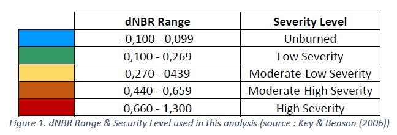
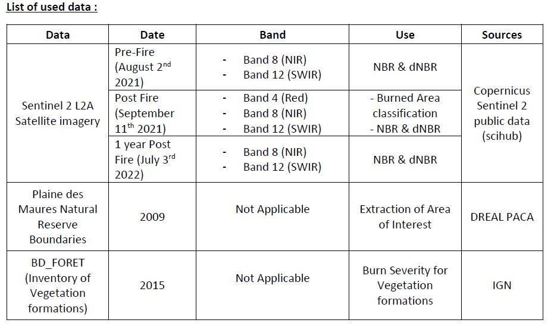
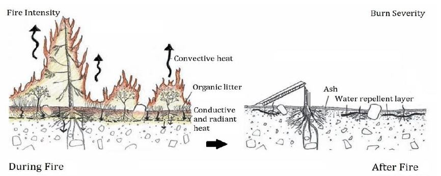
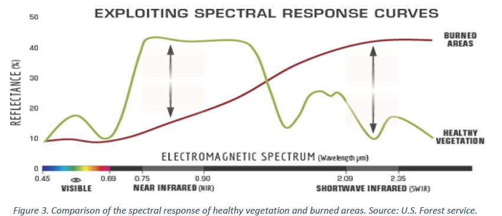
NBR uses the ratio between NIR and SWIR bands, high NBR values indicates healthy vegetation while low values indicate bare ground and recently burnt areas. Non-burnt areas are normally attributed to values close to zero.
Difference Normalized Burn Ratio is the delta between the pre-fire and post-fire NBR (dNBR or ΔNBR), obtained from the images and used to estimate the burn severity. A higher value of dNBR indicates more severe damage, while areas with negative dNBR values may indicate regrowth following a fire.
severity data and maps can aid in developing emergency rehabilitation and restoration plans post-fire. They can be used to estimate not only the soil burn severity, but the likelihood of future downstream impacts due to flooding, landslides, and soil erosion.
The first objective of this analysis was to extract a contour polygon of the burned area. The selected method was a supervised classification based on the post fire Sentinel 2 image.
Band 04 (RED,) Band 08 (NIR) and Band 12 (SWIR) were integrated into a composite raster enabling the creation of the training samples that are then used to classify the raster into 3 groups: Burned Area, Bare Ground and Healthy Vegetation. Bare Ground classification was an important factor in getting an appropriate Burned area, the reason being that it’s reflectance of the electromagnetic spectrum is quite close to that of the less burned areas. It could also be a result of the scattered ashes.
Once that classification was deemed sufficiently accurate, an extraction by attribute was executed to extract the Burned Area, then turned to a polygon and cleaned (A lot of scattered pixels classified as burned were present outside of the burned area, they were removed so as not to incorporate wrong data into the results. Cutting the composite raster to an area close to the AOI might have avoided this problem
The resulting polygon was named “Burned_Area_2021” then clipped to the AOI using the Plaine des Maures Natural Reserve boundary polygon. This polygon was named “Burned_AOI” and correspond to the burned area inside the reserve boundaries.
NBR for Pre-Fire, Post-Fire and 1 year Post-Fire were generated using Raster Calculator with the following syntax:
Note that the “Float” expression is very important here, without it the resulting values would be integers by default.
dNBR is generated using these resulting NBR in a new Raster Calculator Expression :
The dNBR rasters were clipped using the “extract by mask” tool and using two different previously generated Area of Interest :
“Burned_Area_2021” → the whole burned area
“Burned_AOI” → the area burned in the Plaine des Maures natural reserve
Burn Severity symbology was then applied to all the resulting rasters using a previously made symbology layer (see figure 1).
Zonal Statistics as tables were performed on all of the analysis final Burn Severity rasters. The Mean statistic was considered to relate how impacted the Natural reserve was in comparison with the whole burned area.
Going one step further, an analysis to determine what types of vegetation formation were most severely burned was carried out. First Intersecting the vegetation formation layer with burned area, followed by Zonal statistic as table using the Burn Severity raster and finally joining the resulting table to the previously acquired “Vegetation Formation within the burned area” layer. It was then classified using the “Mean” value and the burn severity symbology
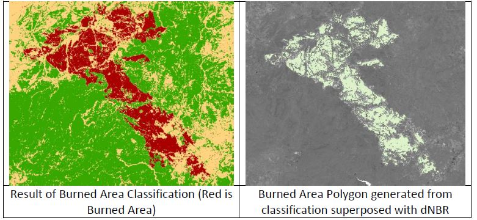
On the left is the classified raster including the 3 previously mentioned classes, (Burned Area in Red, Bare Ground in Beige and Health Vegetation in Green).
Only the Burned Area was refined to be the most accurate. We can see on the right image that it overlaps really well with the Burned Area seen on the dNBR image (burned areas on dNBR appears in white but only the green of the Burned area polygon can be seen, meaning it is accurate enough that it overlap really well).
The following images show the NBR calculated for the different dates, the “burn scar” is very dark and clearly visible on the post fire image. After 1 year, while less “dark” the scar is still visible. NBR value goes from -1 to +1, low values reflect burned area while high value reflects healthy vegetation. (Here low values are “darker” and high values are “brighter”)
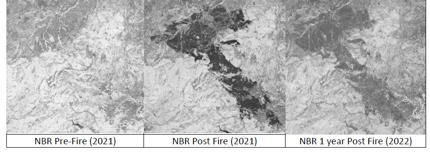
dNBR is the difference of NBR pre-fire and NBR post fire, the values are between -2 and 2. Contrary to NBR, here the highest the value correspond to most severe burns and low values to unburned area.
We start to see some disparities on how the fire affected specific areas, and it becomes even more evident when we look at the 1 year later dNBR, the area situated up north (north being top of the image) look like it has been less severely affected or has recovered better, but no conclusion can be made at this point.
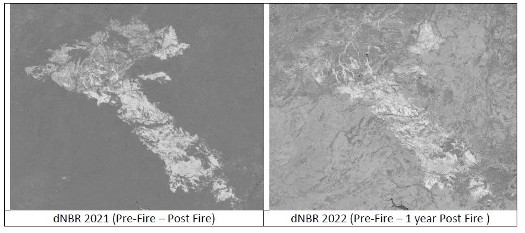
Now once classified Burn Severity symbology has been applied, we can better understand how the fire affected the area.
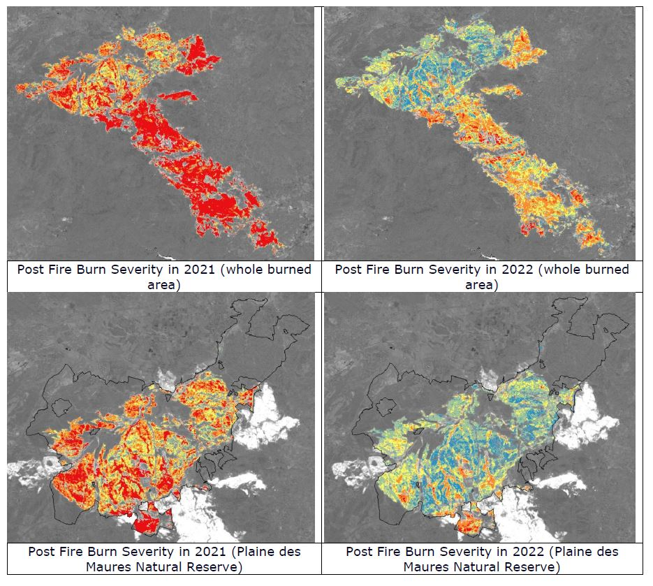
The Natural reserve, was severely impacted but some areas show moderate to low impact. In comparison, the rest of the burned area show high burn severity nearly everywhere.
After one year the difference is clearer, the Reserve show mostly unburned and low severity while it’s mostly moderate – high severity for the rest of the burned area.
The Mean dNBR values obtained from the zonal statistics seems to correlate with this analysis:
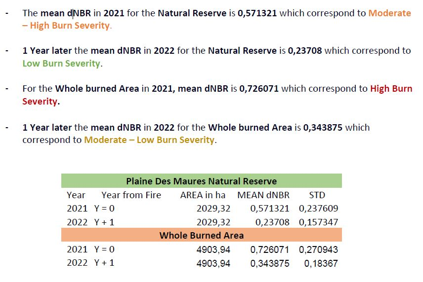
complementary analysis was performed by crossing burn severity data with a “Vegetation Formations” layer (IGN’s BD_FORET). It displays how severely the different types of vegetations formations were affected in the burned area. It brings interesting and valuable information that could be used for post fire vegetation management adaptation.
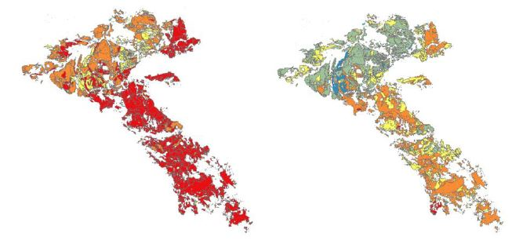
The Plaine des Maures Natural Reserve suffered mostly moderate to high burn severity.
One year later vegetation in the Reserve seems to be well on its way to recovery. After the fire in 2021, the authorities managing the Natural Reserve decided to restrain the access to the Reserve area for one year in order to let the ecosystems recover with limited anthropogenic impact.
However, some areas of the Natural Reserve seem to have been more affected than others. These disparities could originate from a variety of reasons, the type of vegetations affected could be one.
Managing actions directed toward the recovery process of the natural reserve vegetation could focus on these areas.
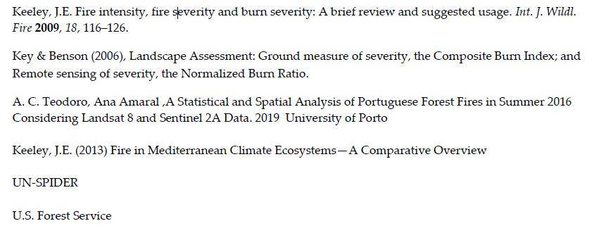